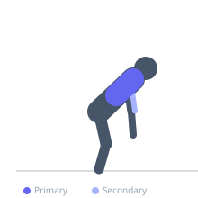

Exercise guide / Ring Row (Lat-Dominant)
Ring Row (Lat-Dominant)
The lat-dominant ring row modifies standard ring rowing by pulling with the elbows flared wide and high, directing the force through the latissimus dorsi more than the rhomboids or middle trapezius. The elbows track outward rather than into the torso, mimicking the lat engagement pattern of a vertical pull within a horizontal plane.
Primary muscles
latissimus dorsi
Secondary muscles
biceps brachii
teres major
Stabilizers
erector spinae
transverse abdominis
Equipment
Gymnastic Rings
Optional
Suspension Trainer (TRX-style)


Starting position
- Set rings at approximately waist height. Grip rings with palms facing each other. Lean back with arms extended, body in a plank at a moderate angle.
Setup
- Lower the rings or walk feet forward to increase difficulty. The more horizontal the body position, the harder the exercise.
Steps
- Step 1: Begin in the extended arm position, body rigid.
- Step 2: Row by driving the elbows out to the sides and upward, rather than straight back.
- Step 3: Pull until the hands reach the chest, with elbows elevated wide.
- Step 4: Lower under control back to full arm extension.
- Step 5: Focus on feeling the lat stretch and contract with each rep.
Coaching cues
- Elbows go wide and high, not behind you
- Think of pulling the rings apart and up simultaneously
- Squeeze the lats at the top — not the shoulder blades together
Breathing
- Exhale rowing up. Inhale lowering.
Range of motion
- Full arm extension to hands at chest with elbows above torso line.
Tempo
- 2-1-2-0
Common mistakes
- Driving elbows straight back — this shifts emphasis to the rhomboids
- Allowing hips to sag — maintain plank alignment
Safety
- Wide elbow rowing increases shoulder impingement risk in those with existing shoulder issues
- Start with a steeper body angle (less horizontal) and progress gradually
Training
- hypertrophy: 10–15 reps
- hypertrophy: 3–4 sets
- Rest: {'hypertrophy': 90}